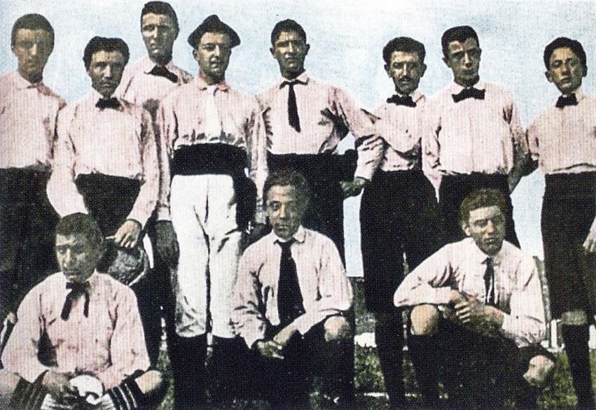
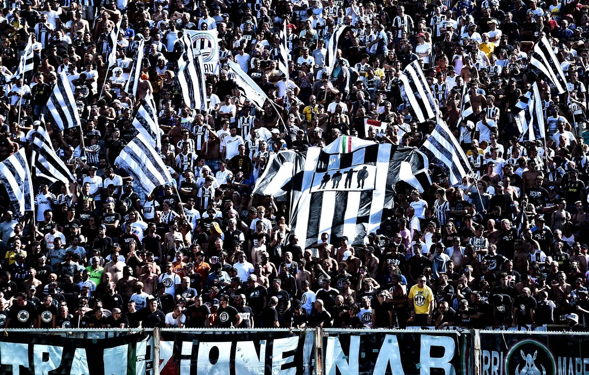
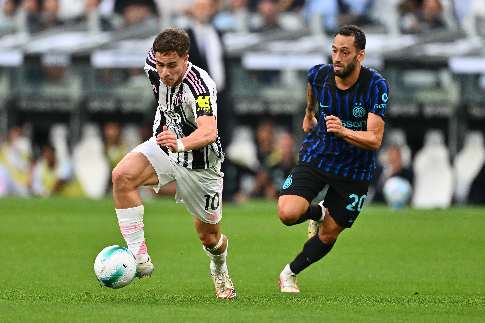

Scopri i momenti più importanti della storia della Juventus, dalla sua fondazione nel 1897 ai suoi leggendari successi, passando per i suoi giocatori iconici, i tifosi appassionati e gli aneddoti che hanno contribuito a costruire l’identità del club bianconero.
La Juventus di Torino è stata fondata nel 1897 da un gruppo di studenti. La crescita del club è legata alla famiglia Agnelli, proprietaria della FIAT, che ha sostenuto la società per molti decenni. Grazie a questo supporto, la Juventus è diventata uno dei club più prestigiosi d’Italia, disputando le sue partite nello Juventus Stadium (oggi Allianz Stadium) e conquistando numerosi successi a livello nazionale e internazionale.

La Juventus è famosa per il sostegno dei suoi tifosi. Tra i gruppi più rappresentativi ci sono i Drughi e i Viking, che per molti anni hanno animato lo stadio con cori, bandiere e coreografie spettacolari. La loro passione ha contribuito a creare un’atmosfera unica, rendendo le partite della Juventus un’esperienza speciale per i sostenitori bianconeri.

Il derby più sentito dalla Juventus è il Derby d'Italia contro l'Inter. Questa sfida mette di fronte due dei club più prestigiosi e titolati del calcio italiano. Ogni incontro è caratterizzato da grande intensità, forte rivalità e un'atmosfera straordinaria sia in campo che sugli spalti. Clicca sull'immagine per vedere gli highlights di una memorabile vittoria della Juventus! ==>
